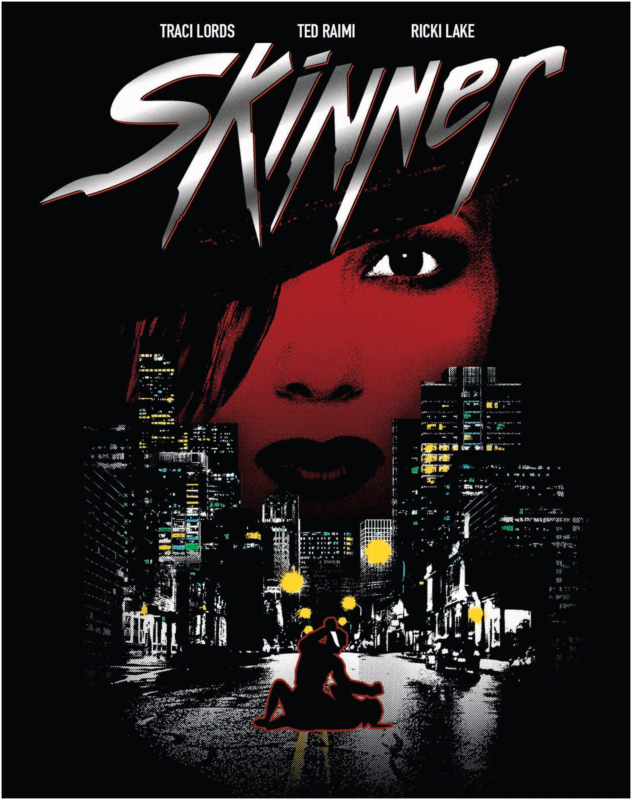

FILMS · DIRECT-TO-VIDEO · 1993
Skinner
A Psychoanalysis Session at the Butcher Shop
There is a recurring misconception in low-budget horror cinema: the belief that the grotesque can be justified by piling on a few layers of psychology, childhood trauma, and prolonged silences. Skinner (1993) follows that recipe.
Directed by Ivan Nagy, the film follows Dennis Skinner (Ted Raimi), who appears to be an ordinary, quiet young man when, in fact, he is a vicious serial killer. In order to keep his secret, he rents a room in the home of Kerry (Ricki Lake) and Geoff. While working at a factory during the day, Skinner continues carrying out his brutal crimes at night. His plans, however, begin to unravel when one of his surviving victims, Heidi (Traci Lords), starts relentlessly hunting him down for revenge.
The film thus presents itself as a study in moral degeneracy, with a protagonist whose pathology appears to have its roots in a childhood marked by abuse and violence. The problem is that Skinner places far too much faith in its own ability to turn violence into psychological inquiry.
Skinner is neither Anton Chigurh nor Freddy Krueger. He is a miserable, socially maladjusted, emotionally stunted individual. His monstrosity does not come from some theatrically demonic force, but from a kind of radical human insignificance.
And Ted Raimi, one of the film's principal assets, understands this. He understands that Skinner seems condemned to compulsively repeat a liturgy of violence that, in his insanity, he is incapable of breaking. Raimi gives a commendable performance, doing much of the work required to lend the film whatever depth it possesses.
But the screenplay has far too much faith in its own psychological architecture. Although certain elements might suggest otherwise, it is less interested in the elementary mechanics of the slasher than in the pretence of constructing an elevated study of a degenerate character. And therein lies both its ambition and its downfall.
Traci Lords, as Heidi, is considerably weaker than the rest of the cast. Her character was conceived to serve a dramatic purpose that should have been important: to act as a kind of counterpoint to Skinner, a force of his own making that would inevitably become his curse.
The execution, however, falls well short of the mark. The screenplay seems convinced that this arc will give the film substantial emotional weight, yet Traci Lords is unable to give the character the gravity required for the film to acquire the density it so desperately wants. The screenplay, meanwhile, moves her from one point to another through plot conveniences and narrative shortcuts that make the whole affair increasingly implausible.
Things are no less absurd when Kery Tate, played by Ricki Lake, enters the picture. The humble, unsuspecting wife who takes Dennis Skinner into her home and develops a passion for him is so absurdly naive that her presence becomes almost as irritating as Geoff Tate's domestic abuse—the terrible husband who is hardly ever home.
Skinner attributes to himself a sophistication he does not possess, though this is certainly not just another bad film. The movie has that particular 1990s independent-cinema aesthetic, with grainy cinematography that lends an additional layer of roughness to the atmosphere it is trying to create.
On the other hand, the film's insistent use of garish colored lighting, vaguely reminiscent of Inferno (1980), produces images completely at odds with the brutal realism it otherwise strives for.
The special effects, meanwhile, are remarkably effective and help create sequences that, without question, probably gave more than a few viewers trouble sleeping.
BLOOD SOMMELIER VERDICT
Skinner is a pretentious, uneven, and occasionally sluggish film. A work determined to offer an intellectual tasting of what is, at heart, exploitation cinema, apparently unaware that the best way to serve an indigestible dish is to stop calling it haute cuisine.